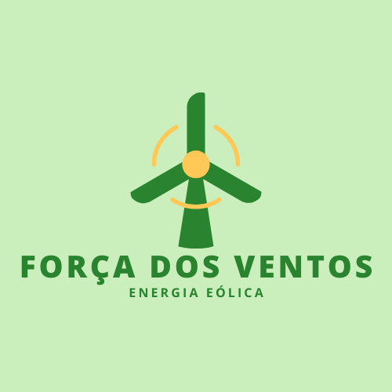
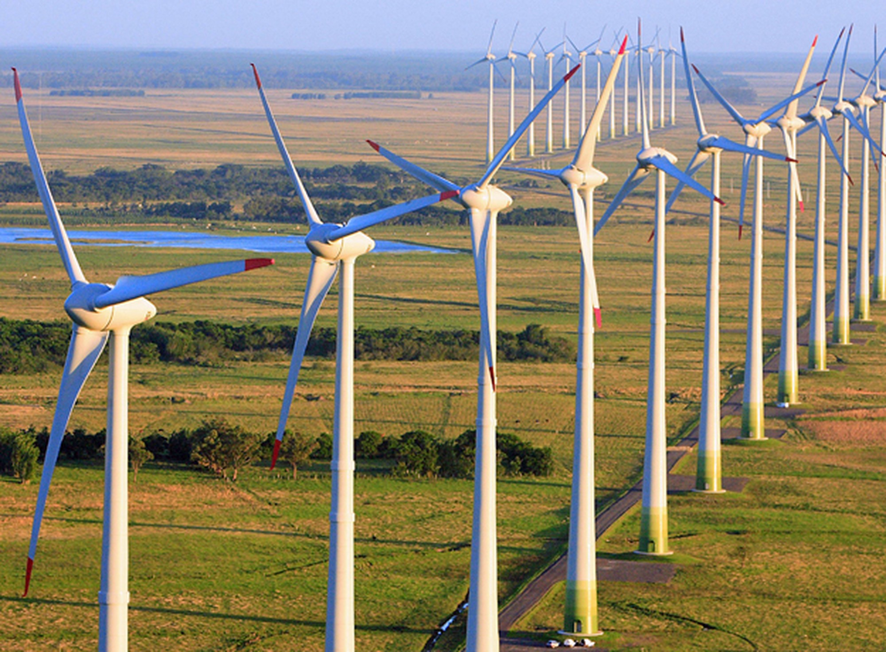

Quem somos?
Somos uma empresa dedicada a transformar o vento em energia para um futuro mais sustentável. Com tecnologia de ponta e um compromisso inabalável com o meio ambiente, desenvolvemos soluções personalizadas em energia eólica para atender às demandas de nossos clientes e contribuir para um planeta mais limpo. Nossa equipe é movida pela inovação e guiada por valores que unem eficiência, responsabilidade ambiental e impacto positivo.
 Saiba maisEnergia Eólica: A Força do Vento Transformada em Sustentabilidade
A energia eólica é uma fonte limpa e renovável que aproveita a força dos ventos para gerar eletricidade. Por meio de turbinas modernas, o movimento do ar é convertido em energia elétrica, contribuindo para a redução de emissões de gases poluentes e promovendo um futuro mais sustentável. Com um impacto ambiental mínimo e grande potencial de expansão, a energia eólica se destaca como uma solução eficiente e inovadora para atender às demandas globais de energia, respeitando o meio ambiente e impulsionando a transição para um mundo mais verde.
 Saiba mais